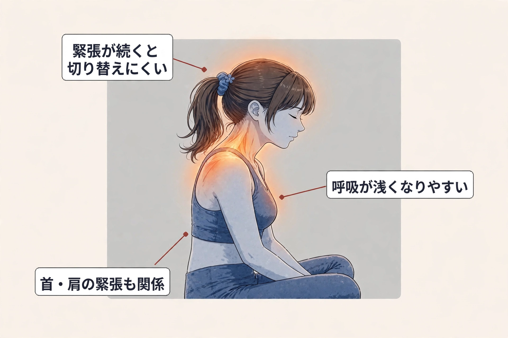

自律神経の乱れ
美容整体ステラ・ポラリス東三国｜大阪市淀川区東三国・東三国駅徒歩5分・女性向け

張りつめた体の力を抜いて、ゆるむ時間を体に取り戻す
なんとなく体がだるい、気持ちが落ち着かない、休んでもすっきりしない——自律神経は、体を活動モードと休息モードに切り替える働きを担い、そのバランスが崩れると、体のあちこちに不調を感じやすくなると言われています。忙しさや緊張が続く生活では、活動モードが抜けにくくなり、体の力みや姿勢の崩れとも重なります。このページでは、自律神経と体の緊張の関係、ゆるむ感覚を取り戻すことを目指す当サロンでのケア、ご自宅でできるセルフケアをご案内します。自律神経の乱れは病名ではなく、体のオンとオフの切り替えがうまくいかない状態を指す言葉です。頑張りすぎの毎日や、季節の変わり目、睡眠の乱れが重なると、切り替えはさらに乱れやすくなります。
ご予約はこちら（Coubic）こんなお悩みありませんか
- 休みの日に休んでも、体のだるさが抜けない
- 気持ちが張りつめて、力を抜く感覚が分からない
- 肩や背中がいつも力んで、固まっている感じがする
- 季節の変わり目に、体調を崩しやすい
- 人前に出る前など、緊張で体がこわばる
- 夕方になると、どっと疲れが出る
- 深呼吸をしても、息が浅い感じがする
当てはまる項目が多いほど、活動モードが続き、体がゆるむ時間を取れていない目安とされています。自律神経の不調は体の緊張とも深く関わります。次のセルフチェックで、体の力みの傾向を確かめてみましょう。
簡単セルフチェック（力みチェック）
椅子に座って、体の力の抜け具合を確かめる簡単な方法です。
- 椅子に座り、両手を太ももの上に置いて、目を閉じます。
- 肩・あご・お腹の3か所に、力が入っていないか順に意識を向けます。
- 意識しても力が抜けにくい、息が浅く感じる場合は、体が活動モードのまま緊張している目安と言われています。
※これは診断ではありません。ご自身の状態の傾向を知る目安としてお使いください。
自律神経の乱れの原因と仕組み
自律神経の切り替えと体の緊張
自律神経には、活動するときに働く交感神経と、休息するときに働く副交感神経があります。忙しい日々が続くと交感神経が優位な時間が長くなり、筋肉は緊張し、姿勢も前のめりに固まりやすくなると言われています。図1のように、体が沈んで縮こまった姿勢は、緊張が抜けにくい状態の現れでもあります。

図1 緊張が抜けにくい状態の姿勢と、軸が通って安定した姿勢のイメージ。体の状態には個人差があります。
姿勢と呼吸のつながり
姿勢が丸まると胸が閉じ、呼吸は浅くなりがちです。浅い呼吸が続くと、体は「緊張している」と判断しやすく、活動モードが抜けにくくなると言われています。逆に、胸が開いて深く息ができる姿勢は、体がゆるむきっかけになります。姿勢を整えることは、切り替えの土台づくりにもつながります。また、背中が丸まった姿勢では胸が閉じて呼吸が浅くなりやすく、呼吸の深さは自律神経の切り替えとも関わると言われています。姿勢を整えることは、切り替えの土台を整えることでもあるのです。
巡りと冷えの関わり
緊張が続くと手足の先の巡りが滞りやすく、冷えやだるさを感じやすくなります。体の中心が固まっていると、末端まで巡りが届きにくい状態です。全身をゆるめて巡りを助けることは、体の重さや冷えの感じ方にも関わってきます。
生活リズムの影響
睡眠の質や食事の時間、画面を見る時間など、生活リズムの乱れも自律神経のバランスに関わると言われています。体のケアとあわせて、ゆるむ時間を意識的につくることが大切です。このページの内容は一般的な情報で、診断や医療的な判断に代わるものではありません。
セルフケアで足りる場合・サロンケアが向く場合
不調の波が小さく、温めたり体をほぐしたりすると楽に感じる日が多い場合は、まずご自宅でのセルフケアと生活リズムの見直しを続けて様子を見る方法があります。一方で、体の力みが強く自分では抜き方が分からない、全身が固まって重い、ゆるむ時間そのものを持てていないという場合は、サロンでのケアが向いている目安になります。サロンでは、全身をゆるめる施術で、施術後に「体が軽い」「息が深くできる」と感じやすい状態を目指します。気になる症状が続く場合は、医療機関への相談もご検討ください。施術では、体の状態を一緒に確認しながら進めるため、ご自身の緊張のパターンに気づくきっかけにもなります。
当サロンでのケア
当サロンの自律神経ケアは、「全身の力を抜いて、ゆるむ感覚を取り戻す」ことを目指す組み立てです。まず姿勢と体の力み具合を一緒に確認し、部位と目的に合わせて3つの手技を組み合わせます。
美容整体：背骨のラインと姿勢の軸を整え、胸が開いて深く息がしやすい土台をつくることを目的に。縮こまった体を伸ばすお手伝いをします。
アロマオイルマッサージ：背中から全身をオイルでゆるめ、巡りが流れやすい状態を目指します。香りに包まれる時間そのものが、ゆるむきっかけになります。
もみほぐし：固まった肩や背中、腰まわりをほぐし、体の力みが抜けていく感覚を目指して進めます。
ケアを通して目指すのは、こんな変化です。
- 全身の力みが抜けて、体が軽く感じる状態へ
- 胸が開いて、深く息ができる感覚へ
- 肩や背中の固さがゆるみ、姿勢が伸びやかな印象へ
- 手足の先まで、温かさが巡るような感覚へ
- ゆるむ感覚を知り、日常でも力を抜きやすい状態へ
施術の仕上げには、ご自宅でできる深い呼吸の整え方や、温める習慣のポイントもお伝えします。ゆるむ時間を体に覚えさせることが、日々の切り替えの助けになります。完全個室のため、周りを気にせずゆったりお過ごしいただけます。乱れやすい時期ほど、休む時間を先に予定へ入れておくことが、自分を守る工夫になります。

施術の流れ
ご来店後、気になる部位やお悩み、ご希望の強さなどをうかがいます。完全個室のため、周りを気にせずお話しいただけます。
姿勢の軸や体の力み具合、肩や背中の張りなどを一緒に確認し、その日の状態に合わせた施術の進め方をご案内します。
美容整体を中心に、ご希望に応じてアロマオイルマッサージ、もみほぐしを組み合わせて進めます。強さは途中でも調整できます。
施術後の状態を確認し、ご自宅で続けやすいセルフケアのポイントをお伝えします。次回の目安についても、ご希望があればご案内します。
料金
| コース | 通常価格 | キャンペーン価格（12/25まで） |
|---|---|---|
| 80分 | 8,000円 | 3,000円 |
| 100分 | 10,000円 | 4,000円 |
| 120分 | 12,000円 | 5,000円 |
クリスマスキャンペーンは12月25日まで、ご新規様もリピーターの方も対象です。施術内容は当日の状態とご希望に合わせて組み立てます。
ご自宅でできるセルフケア
- 温める習慣：湯船にゆっくり浸かる、首の付け根やお腹を温めるなど、体を温めてゆるむ時間をつくります。寝る前が取り入れやすい時間です。
- 胸を開く深呼吸：椅子に座って胸を開き、鼻からゆっくり吸って、口から長く吐きます。吐く息を長めに、5回ほど繰り返してください。
- 肩の上げ下げ：両肩を上げて5秒キープし、ストンと下ろします。力む感覚と抜く感覚の違いを体に覚えさせる体操です。
- 画面から離れる時間：寝る前30分はスマートフォンを置くなど、活動モードを下げる工夫も、切り替えの助けになります。
ご自宅でのケアに：セルフケア資料ライブラリ（無料）
このお悩みに合わせたセルフケアの考え方を、無料の資料ライブラリでご紹介しています。
セルフケア資料ライブラリを開く →
受診の目安
めまいや動悸、強い不安感などが続く場合や、日常生活に支障が出ている場合は、施術の前に医療機関への受診をおすすめします。症状の背景にはさまざまな要因があり、医療機関での相談が大切なことがあります。気になる症状があるときは、まず医療機関でご相談ください。
よくある質問
Q. 初めてでも大丈夫ですか？
はい。当サロンは完全予約制・完全個室で、1日3組までのご案内です。最初にカウンセリングで体の状態やお悩みをうかがい、無理のない内容から始めます。施術の前後で「体が軽くなった」「息が深くできる」といった感覚の違いを一緒に確認しながら進めますので、初めての方も安心してご利用いただけます。
Q. 施術は痛いですか？
強さは、ご希望をうかがいながら調整します。力んだ体を無理にほぐすのではなく、心地よいと感じる圧を基本に進めます。感じ方には個人差がありますので、施術中も遠慮なくお声がけください。
Q. コースはどう選べばいいですか？
80分・100分・120分のコースがあり、ケアしたい部位の広さやお時間のご都合に合わせて選べます。全身をゆっくりゆるめたい方には、120分で全身を、100分で背中を中心に整える組み立てが選ばれることが多いコースです。迷われる場合は、ご予約の際にお気軽にご相談ください。
Q. 場所と予約方法を教えてください。
大阪市淀川区東三国、東三国駅から徒歩5分です。完全予約制のため、予約サイト（Coubic）またはLINE公式アカウントからご予約をお願いしています。
Q. 男性も受けられますか？
当サロンは女性向けのため、男性の方は、同じ東三国の男性専用整体院「北辰堂」をご案内しています。
施術者について
平賀建人（施術歴30年）
鍼灸師・登録販売者・アロマセラピスト・パーソナルトレーナーの資格を持ち、美容整体を中心に、アロマオイルマッサージ、もみほぐしを、その日の状態とご希望に合わせて組み合わせて施術します。このページの内容は、施術者の知識と経験をもとに作成しています。

料金・ご予約
ご新規様もリピーターの方も 12/25まで
80分 3,000円／100分 4,000円／120分 5,000円
通常価格は80分8,000円／100分10,000円／120分12,000円です。施術内容はご希望に合わせて組み立てます。
営業時間：月〜土 17:00〜23:00／日 10:00〜23:00（完全予約制）｜電話：080-2468-3086
大阪府大阪市淀川区東三国2丁目25番4号101（東三国駅徒歩5分）